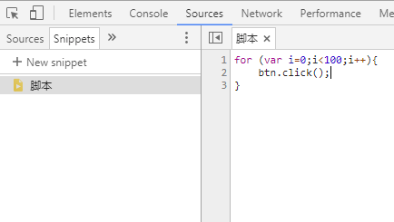
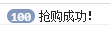
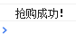

JS是作为一种浏览器端脚本诞生的，这个特点使得JS脚本配合浏览器开发者工具可以完成一些特殊的功能。例如：刷抢购按钮。
这里我写了一个简单的刷抢购demo：
for (var i=0;i<100;i++){ |
一般我们可以在浏览器调试工具中的Snippets中运行它：

这个脚本的原理是通过一个循环语句在极短的时间内对网页中一个id为btn的按钮连续点击100次，其运行结果如下：

当开发者要对前后台进行高并发模拟的时候，这不失为一种简单易行的方式。但是在生产环境中，如果你在写事件脚本时没有对此类可能的请求进行限制的话，那么你的商品就会被某些投机取巧的人士抢走，另外还有可能造成服务器崩溃。
要通过前端阻止这类恶意脚本的肆意妄为（至少让其不那么容易得逞，要彻底阻止的话理论上还需要在后台进行限制），这里提出两种方案：
- 对按钮事件监听函数进行节流处理；
- 每次点击后给按钮加锁。
1.节流函数
节流处理的原理是在监听处理函数中对处理动作进行延时执行。我们可以用setTimeout()函数来实现节流，具体操作是：当监听到按钮被点击时就进行一次延时处理动作，延时的时间要既能小到让用户察觉不到明显的延迟卡顿，又能大到足以抵消循环触发脚本的循环间隙（一般都是可以的），一旦在延时的时间内再次监听到按钮被点击了，则立即取消上一次延时动作，并再次创建一个同样的延时动作，这样一来，无论循环触发多少次都只处理最后一次点击。实现的代码如下：
// 按钮监听函数 |
在我们对按钮进行了节流处理后，当再次运行本文开头的循环触发脚本时，结果如下：

可以看到，100次点击动作只被响应了一次。
2.给已点击按钮加锁
给按钮加锁的思路是：一旦接收到点击事件后，立马给按钮上锁，使按钮在一段时间内无法再次被点击（只是一个思路，具体实现方式可以有多种），直到后台返回结果后，再恢复按钮的可点击状态。代码如下所示：
// 一种实现思路 |
上述代码中创建了一个Promise对象异步进行提交动作，返回成功结果后即恢复按钮的可点击状态。
当再次运行本文开头的循环触发脚本时，按钮只响应了一次点击，证明这种方式是可行的。